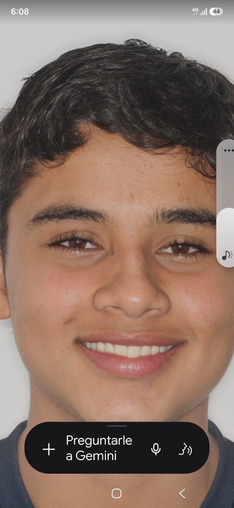

¡Hola! Soy
MIGUEL ANGEL MUNERA LONDOÑO
Estudiante con curiosidad por aprender
Soy un joven con muchas ganas de emprender de aprender y de ser un gran negociante en el mundo
Mis metas e intereses
🎓 Aspiraciones educativas
Quiero continuar mis estudios, fortalecer mis habilidades y prepararme para una carrera en la que pueda aprender y contribuir a la sociedad.
💻 Intereses tecnológicos
Me interesan la programación, el diseño web y cómo la inteligencia artificial y otras tecnologías ayudan a resolver problemas cotidianos.
📚 Áreas de estudio
Disfruto las matemáticas y la comunicación. También quiero explorar más sobre tecnología, diseño y pensamiento creativo.
🌱 Otros intereses personales y académicos
En mi tiempo libre me gusta leer, escuchar música, dibujar y participar en actividades académicas y proyectos colaborativos.